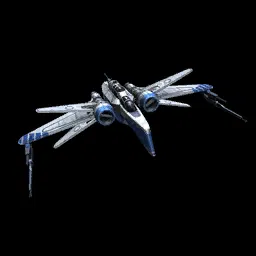
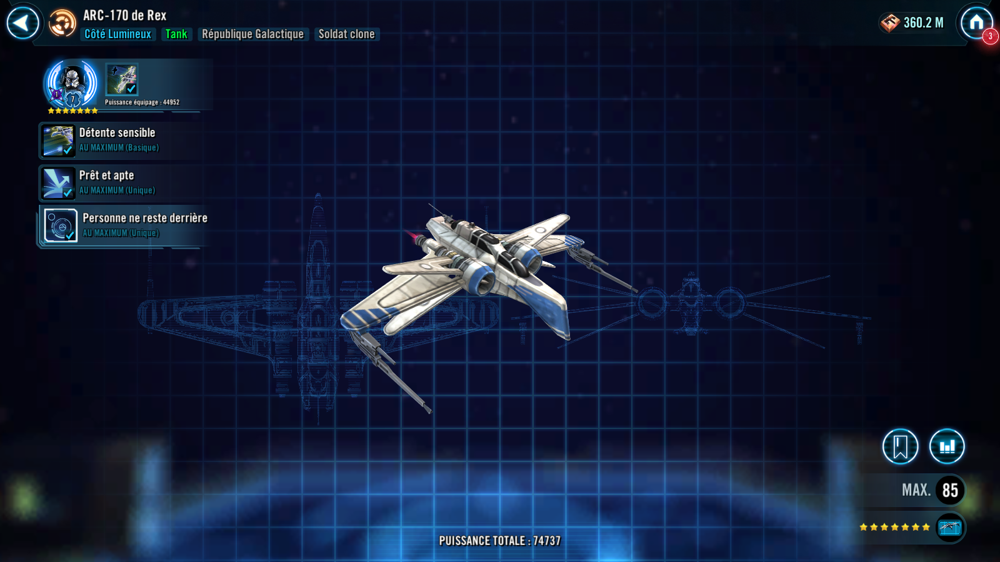
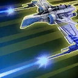

Rex's ARC-170
Defensive Clone Tank that can inflict Target Lock and boost ally Protection and Tenacity

Defensive Clone Tank that can inflict Target Lock and boost ally Protection and Tenacity

Rex's ARC-170 and another target ally gain 50% Turn Meter and recover 50% Protection. This ability's cooldown is reduced by 1 for each other active Galactic Republic ally.

Deal Physical damage to target enemy and inflict Target Lock for 2 turns if they have no buffs or debuffs. Otherwise, remove 20% Turn Meter.
While Rex's ARC-170 is active, Galactic Republic allies have +10% Tenacity, and whenever an ally Resists a debuff, all other Galactic Republic allies recover 15% Protection.

Enter Battle : Enter Battle: Grant allies a buff for 2 turns, based on their role:
- Tank: Defense Up
- Support: Health Up (20%)
- Attacker: Critical Chance Up